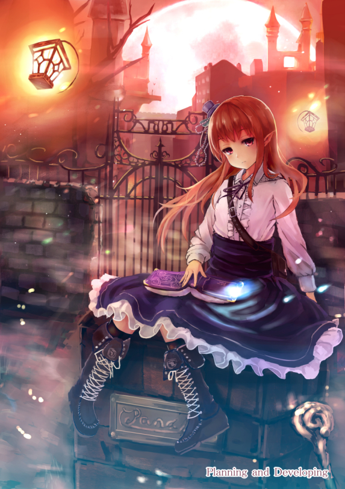
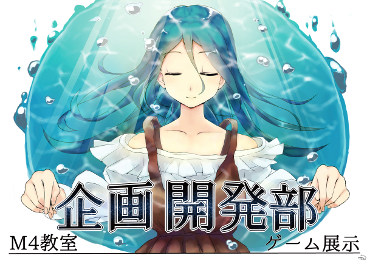
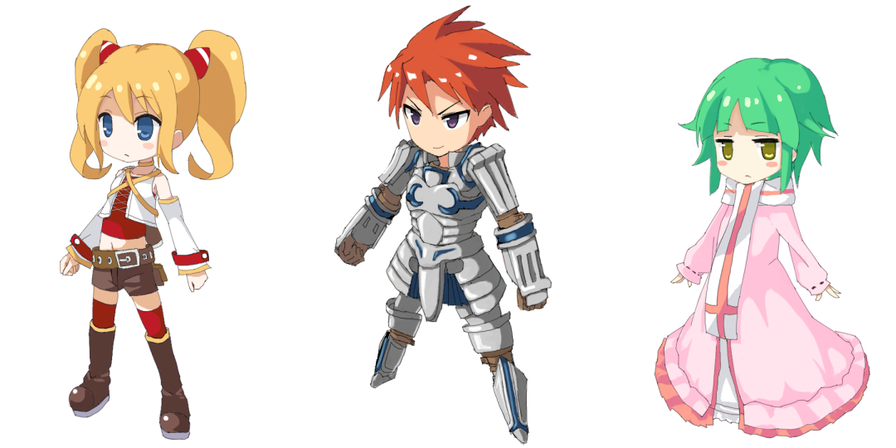

けたろう
↑鍵を解いて
アイコンを
完成させよう！
特に意味はないぞ！
プロフィール 作品 ブックマーク フィード
投稿したイラスト・漫画
- 
poster
- 
poster
- 
ゲームの素材
プロフィール
| ハンドルネーム | けたろう |
|---|---|
| 性別 | 男 |
| 学年 | ４年生 |
| 役職 | グラフィッカー（主に２D） ３Dもほんの少し出来る |
| 出来そうなこと | キャラクター 背景 ドット 3Dモデル（人物はきついかも） 女の子とかなら喜んでかくと思うよ。ゲームの小物とかも多分出来る。GUIも簡単なものなら |
| 自己紹介 | グラフィッカーのけたろうです。 部室にはそこそこの頻度で現れると思う。 主に書いているものは女の子。最近はイケメンとおっさんを練習してたりする。 好きなゲームはFPSとかアイマスとかポケモンとか艦これとか。 最近は全くやってないけどね。 アニメはだいたい見てます。テンポいいアニメは大好き。 あと声優のアドリブアニメも大抵は好きです。 Pであり提督である。 グラフィッッカーでなんかわからないことあったらどんどん質問してくだされ。 よろしくー |
作業環境
| コンピュータ | macbookair win7 |
|---|---|
| ソフト | SAI クリスタ Blender Live2D |
| タブレット | intious4 M |
| 絵を書くときに聞く音楽 | アイマスアイカツ あとはアニメを垂れ流す |
| ハンドルネーム | けたろう |
|---|---|
| 役職 | グラフィッカー |
| 学年 | ４年生 |
| 趣味・特技 | アニメ鑑賞・お絵描き |
| 自己紹介 |
女の子とか自然物とかなら一応描けます。
ドットも出来なくはない、3Dも頑張ればできそう。
最近は自らコーディングしようと模索中… 〜このプロフについて〜 ドット絵の女の子をキーボードで動かしてアイコンまで移動させよう アイコンには鍵がかかっているようだ、このままでは完成しないぞ。どこかに鍵があるかも…？ 完成すると詳しいプロフィールが見れます !を押すとスキップできます。 |
キーボードでキャラを動かせるよ 対応 j:[←] i:[↑] k:[↓] l:[→]